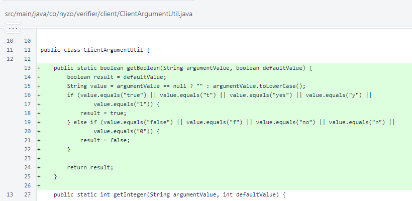
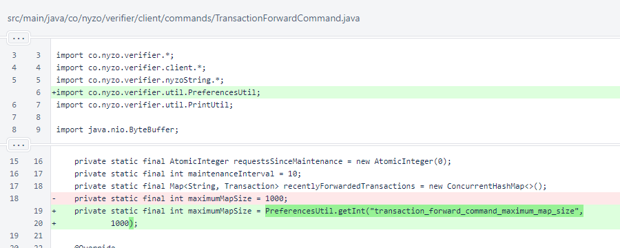
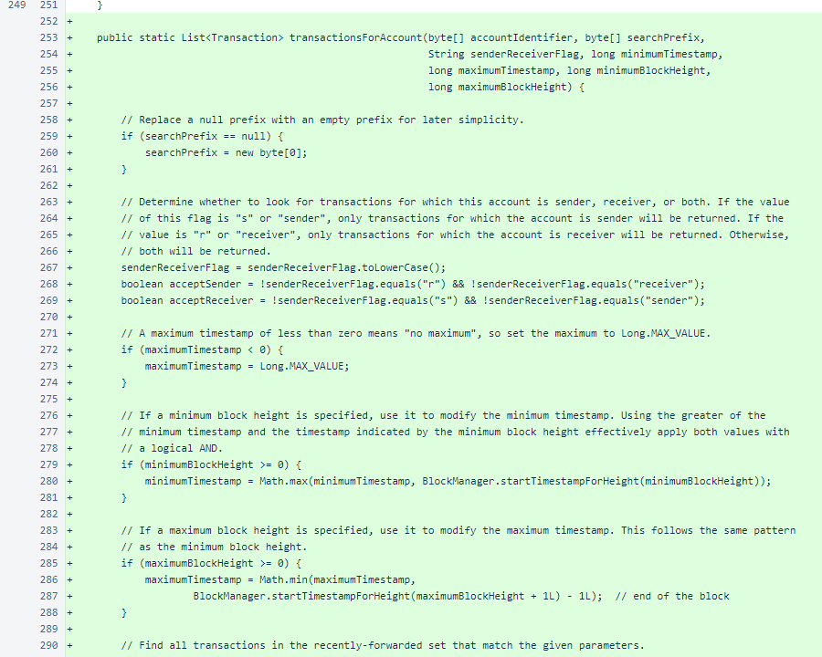
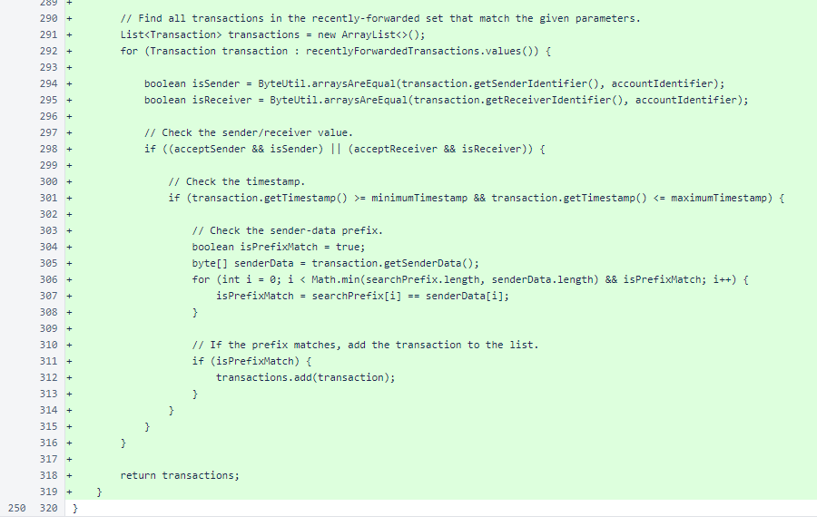
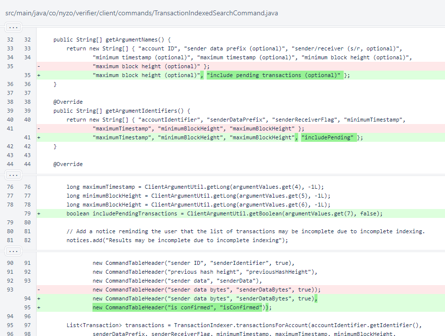
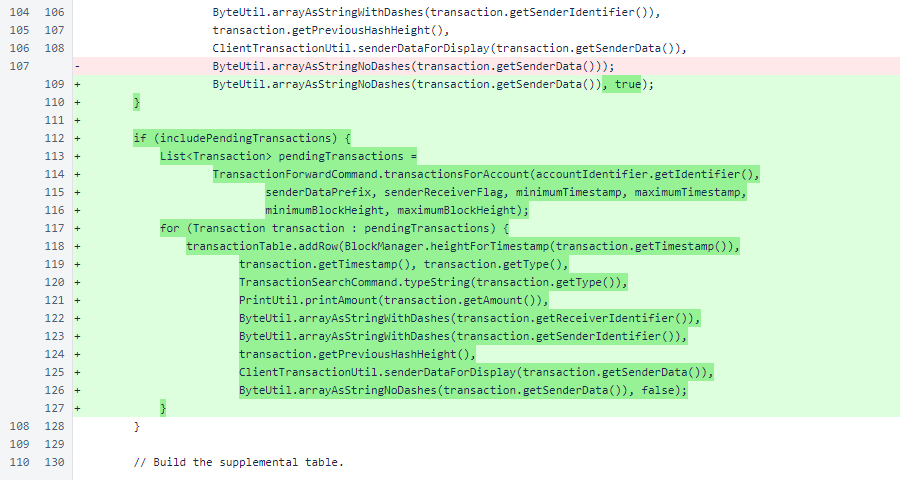

Nyzo version 623 (commit on GitHub) provides an option for the TransactionIndexedSearchCommand to return pending transactions in addition to confirmed transactions.
This version affects the client.
In ClientArgumentUtil, a method was added for processing boolean client arguments. The following inputs evaluate to true (including all case combinations, such as Yes and trUE):
The following inputs evaluate to false, including all case combinations:
All other inputs are treated as if an input is not provided, and the method returns the default value.
In TransactionForwardCommand, the maximumMapSize constant was modified to allow specification in the preferences file with the key transaction_forward_command_maximum_map_size. The default of 1000 is the same as the previous value, so behavior is unchanged if this prefence is not used.
The TranactionForwardCommand.transactionsForAccount() method follows the same pattern as the TransactionIndexer.transactionsForAccount() method. It has the same arguments, and it applies these arguments in the same way.
However, instead of reading transactions from indexed files, this method searches through the values of the recentlyForwardedTransactions map. This method performs a full search of the map, but the map size can be kept to a manageable size to avoid computational concerns.
In the TransactionIndexedSearchCommand, the includePending argument was added. The default value of this argument is false, which is important. Previously, this command provided only transactions that had been confirmed by the cycle. Changing the default behavior of this command to include unconfirmed transactions would be misleading to any clients of the API that were unaware of the change.
In the response, an isConfirmed field was added to differentiate confirmed transactions from pending transactions.
If pending transactions are requested, they are added to the result after the confirmed transactions.
